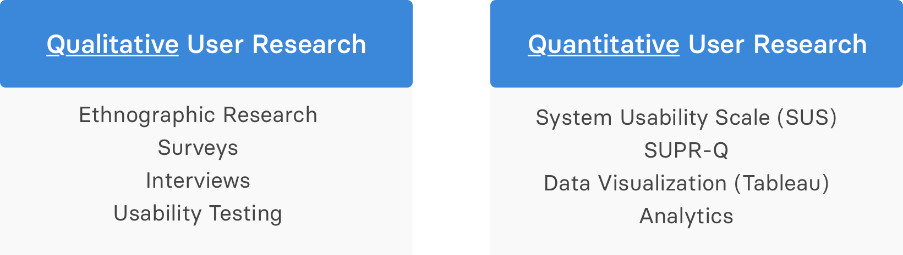

.

National Football League
PRODUCT DESIGN INTERNSHIP | SUMMER 2019
Introduction
This past summer I worked as a Product Design Intern on the UX/Product Design Team at the National Football League. My two biggest projects were creating a quickstart guide for the design system and increasing engagement with the Insights page. In addition, I worked across several smaller projects doing user research.
Streamlining the Design System
I was tasked with creating a Quickstart Guide for the NFL's design system: Facemask. I manipulated and created assets to be used in the Quickstart Guide as well as across the NFL's web and mobile applications.
The Quickstart Guide would onboard designers, developers, and stakeholders to the design system and reduce interdepartmental friction. Therefore, my primary goals when designing the site were readability, brevity, and clarity.

The final product: a quickstart guide introducing relevant stakeholders to the NFL's design system
User Research
I attended the training camps of the LA Chargers, LA Rams, and Dallas Cowboys to conduct ethnographic studies and interview fans. I had the unique opportunity to learn about dynamic user goals from the off-season to the pre-season.
To complement this qualitative user research, I worked with the UX team to handle results from SUPR-Q tests and transform data in Excel and Tableau to transform interview responses into quantitative data.
- Taking this data-driven approach allows the NFL be able to present the results of their products/services across multiple platforms, making it plausible to accurately track the NFL's growth through data visualization.
My responsibilities included/used:
I also constructed use cases for a possible floating action button (FAB) on the Insights page. My goal was to understand what kind of insights users would be likely to read based on the context of:
- Level of understanding
- Team stats
- Player stats
My work centered around the Insights page
Takeaways
With the world rapidly shifting from print to digital, design systems are quickly becoming more important. To be plopped into the NFL during the final stages of its rebranding helped me learn immensely about the entire design process and how it's applied in a seasonal environment.
I also had the pleasure of presenting the importance of the design process/design system to the entire NFL Media department.

Our team emphasized understanding the fan. Football can be a massive part of someone’s life, but it can be a time killer for another. Our primary focus was to understand the different kinds of fans within the football space, and be able to design the insights page to cater towards all types of fans.
Working for the NFL the summer of its centennial season was a rollercoaster. Thanks for letting this Chargers fanboy experience a once in a lifetime opportunity.
Outcomes
- The design system guide cut onboarding time to <4 minutes to NFL visual guidelines.
- User research pertaining to NFL mobile app/website to be heavily used in data visualization as the NFL begins to emphasize quantitative user research.
- Specific use cases for the Insights page to decrease bounce rate by 20%.